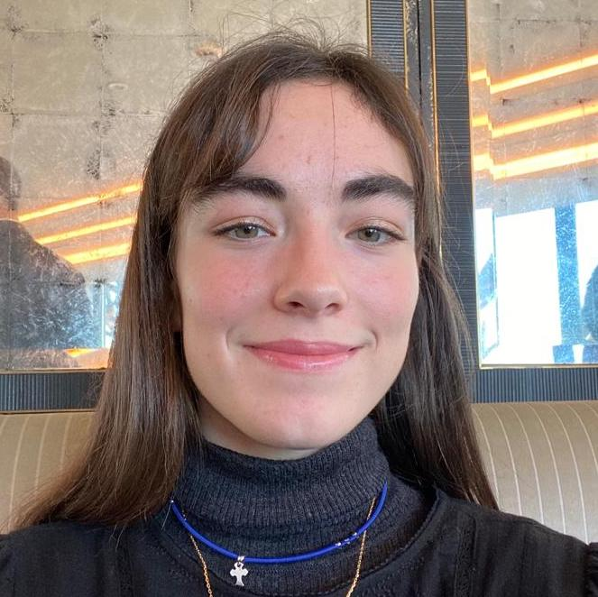
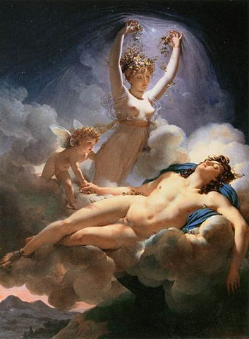

Nice to meet you, I'm Agathe
I am very happy to welcome you on my website ! You will be able to discover a little more about me and my passions. Regarding my passions, I will tell you about travel 🌍 and art 🎨! But before that, I will introduce myself 👱🏼♀️. Moreover, you can see my Linkedin here ⬇
Discover My LinkedinWHO I AM 👩🏻
My name is Agathe Louis, I am currently 18 years old and I was born on November 4, 2003 in Troyes. I am lucky to have a younger brother, Erwan. He is 16 years old. I spent my childhood in the pretty town of Nancy then I moved to Marcq-en-Baroeul, near Lille. I was in college and high school at Marcq Institution. Then after my baccalaureate specializing in mathematics, physics and natural sciences, I succeed in joining IESEG. Now that you know more about me, I invite you to discover my hobbies and what it brings to me.
🛫 TRIPS 🛬
Thanks to my parents, I had the opportunity to visit several different countries and discover several cultures. For example, I went to Sri Lanka for 2 weeks and it allowed me to get out of my comfort zone. So thanks to this experience, I was able to see the daily life of the inhabitants, taste new flavors and visit some magical places like the Golden Temple of Dambulla.
🎨 ART
I cultivate a great passion for art in general. I really like visiting museums, or attending a performance in theater, or visiting art galleries. When I was in college I chose the cultural class option. With this option I was able to develop my interest for art. I went to Greece with my class to study ancient Greek architecture and art. I also went to Paris to see Antigone at the Comedie Francaise. All this activities are essential for me because it allows me to develop my creativity. Before moving onto the next section, here is my favorite painting : Aurore et Céphale by the french painter Pierre-Narcisse Guérin. 